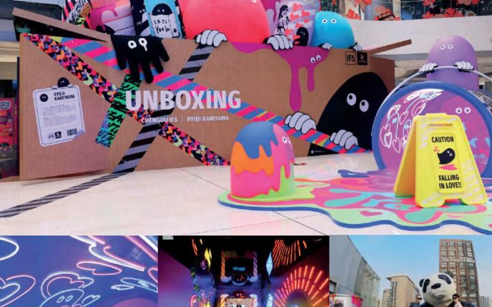

2023 / 成都 IFS / 神山隆二
UNBOXING! 奇思妙「箱」
A Chengdu IFS exhibition built around Ryuji Kamiyama's interpretation of unboxing and the Ratface world.
以「开箱」为主题，由神山隆二的 Ratface 世界构建巨大盒子中的艺术空间。
Back to Projects
A Chengdu IFS exhibition built around Ryuji Kamiyama's interpretation of unboxing and the Ratface world.
以「开箱」为主题，由神山隆二的 Ratface 世界构建巨大盒子中的艺术空间。
Back to Projects